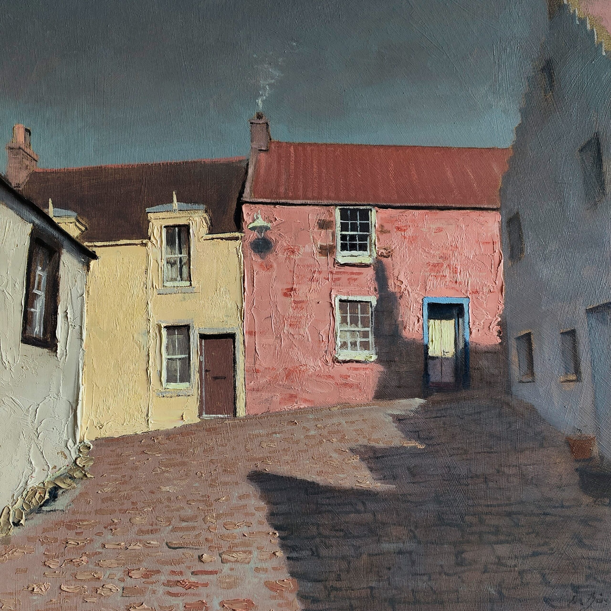

Iechyd Da
Bill Ryder-Jones
2023
A nos amours.
Un album dont la grande force est de faire éclore des bijoux de sensibilité à partir d’un état émotionnel cafardeux. Bill Ryder-Jones canalise ici merveilleusement bien sa sensibilité, laisse quelque peu tomber les guitares électriques pour des arrangements plus folks qui lui vont à ravir.
Iechyd Da s’ouvre sur les instants suivant une rupture douloureuse : esseulé, triste, sonné. Bloqué dans une relation d'ores et déjà réduite en cendres. Coincé sur un canapé avec des souvenirs défilants sur l’écran et le monde extérieur qui parade joyeusement devant les fenêtres. Et pourtant tout s’ouvre. Porté par le sample de « Baby » de Caetano Veleso, Bill nous donne le ton de l’album avec la merveilleuse « I Know That It’s Like This (Baby) ».
Chanson après chanson (diamant après diamant) un schéma se dessine : Bill Ryder-Jones trace le chemin d'accommodation à cette amère fatalité. A force de lutter, le dépit et la tristesse finissent par s'estomper pour aboutir aux chœurs infantiles et candides de « It’s Today Again ».
Puis arrive un moment où il est en mesure de dire aurevoir. Mais sans aigreur ni regrets. Et même sans oublier. La réminiscence du regard de l'autre demeure comme pilier de la construction d’un nouvel équilibre. Le sentiment de s'être senti aimé transcende l’expérience vivante.
On prend plaisir à parcourir ce chemin rédempteur guidé par cette voix vulnérable. Une très grande sensibilité canalisée, ornementée admirablement et arrivée à maturité artistique. Une très, très grande œuvre.
Santé.